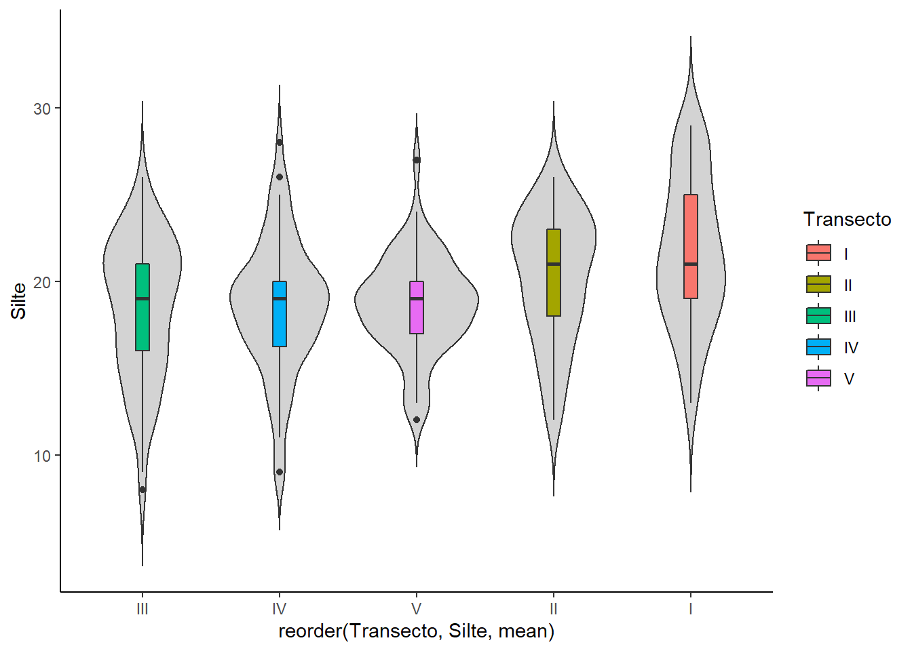
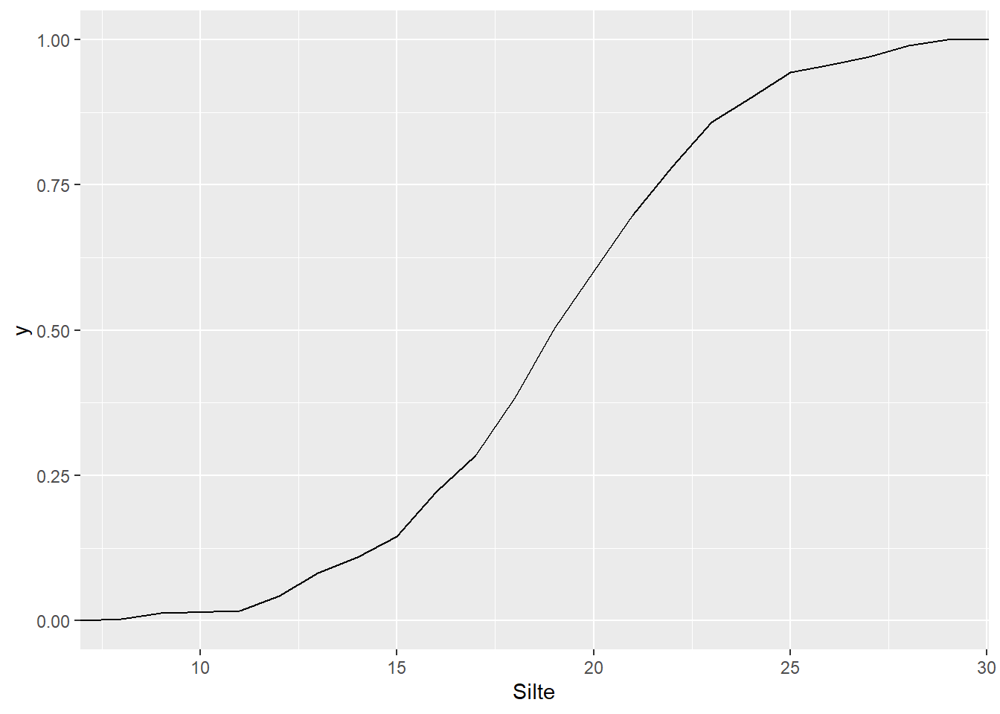
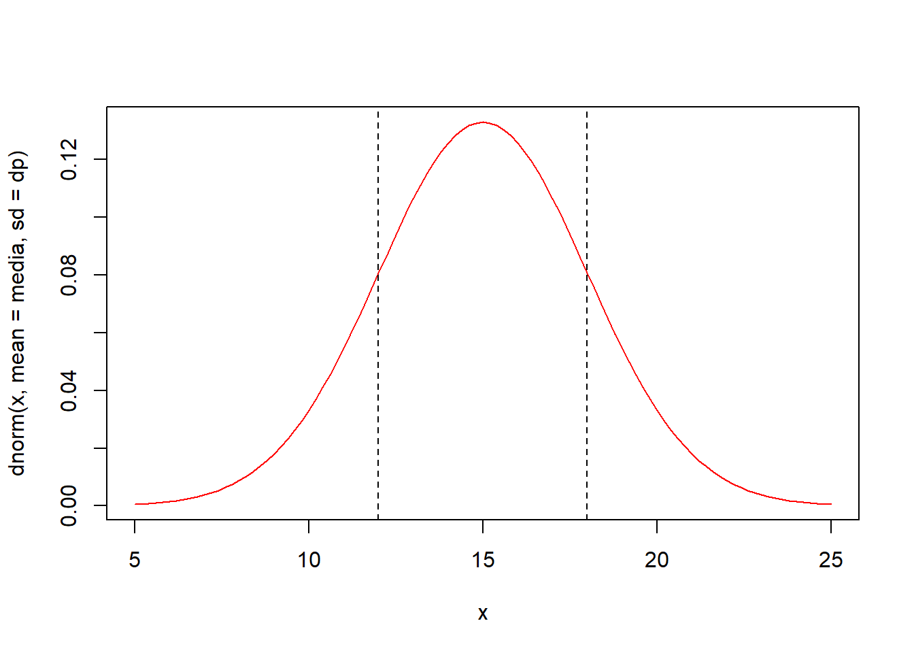
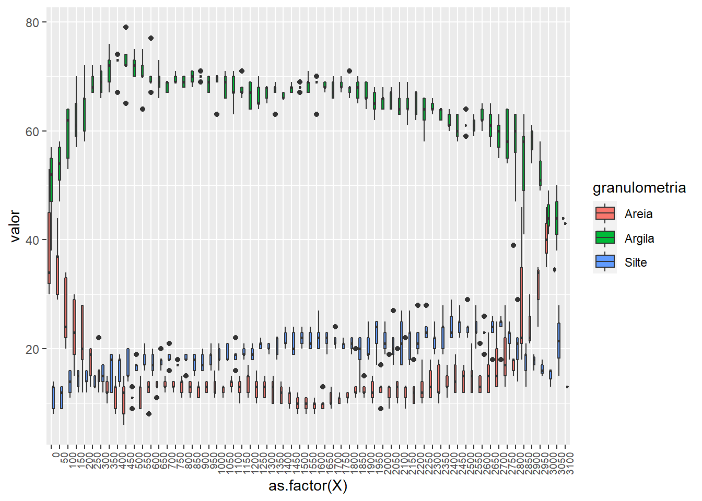
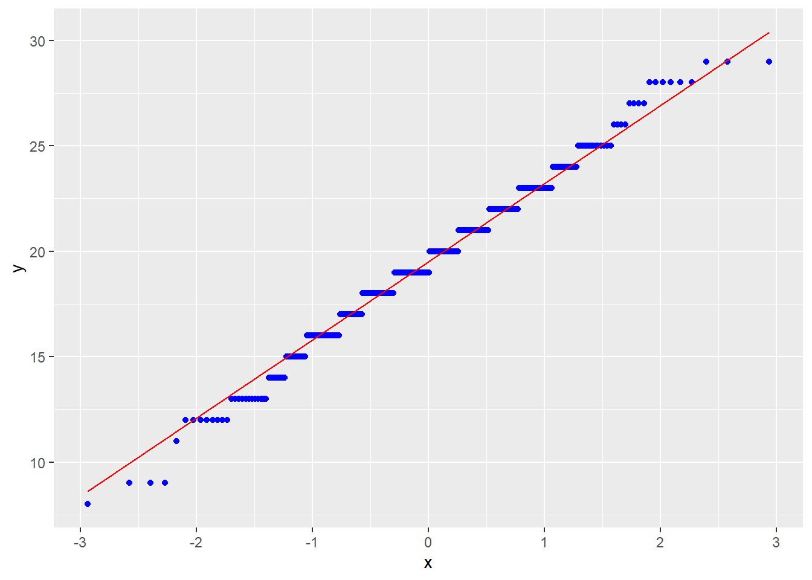

11 Distribuição De Probabilidade
11.1 Distribuição Normal
A exata curva de densidade para uma particular distribuição normal é descrita pela sua média \(\mu\) e pelo seu desvio padrão \(\sigma\), cuja função de densidade de probabilidade é dada por:
\[ f(x) = \frac{1}{\sigma \sqrt{2 \pi}}e^{-\frac{1}{2} \frac{(x-\mu)^2}{\sigma^2}}, -\infty < x < \infty \]
A curva é totalmente caracterizada por \(\mu\) e \(\sigma\). Vamos utilizar a função curve() junto à função dnorm() para a construção da representação gráfica da distribuição normal. A função dnorm() retornará o valor de densidade de frequência, ou seja, \(f(x)\) para uma média e desvio-padrão definidos em seus argumentos mean e sd, respectivamente.
# Definião dos parâmteros
media <- 15
dp <- 3
# Construção da curva
curve(dnorm(x,mean=media,sd=dp),5,25,col="red")
A curva normal modela a distribuição de frequência de muitos eventos biológicos. Muitas das estatísticas utilizadas na inferência estatística seguem a distribuição normal. É a mais importante das distribuições contínuas por causa do seu papel na teoria amostral.
Como visto, a curva é simétrica é relação à média \(\mu\) e tem área sob ela igual a \(1\).
\[ \int_{-\infty}^{\infty} f(x) dx = 1 \]
Portanto, vamos adicionar uma linha no gráfico anterior, representando \(\mu\).
curve(dnorm(x,mean=media,sd=dp),5,25,col="red")
abline(v=media,lty=2)
Assim, a área (probabilidade) até o valor de \(\mu\) é metade da área total, ou seja \(0,5\). Vamos buscar esse valor com a função pnorm(), utiizando como argumento o valor do eixo x, aqui denominado quantil (q) desejado e os parâmetros média e desvio padrão. A função sempre retorna a área acumulada de \(-\infty\) até o valor de q.
pnorm(q=media, mean=media, sd=dp)## [1] 0.5Em outras palavras, calculamos \(P(X<\mu)\)
Calcular a área entre os pontos de inflexão da curva, ou seja:
\[ \int_{\mu - \sigma}^{\mu+\sigma} f(x) dx = 0,6826895 \]
curve(dnorm(x,mean=media,sd=dp),5,25,col="red")
abline(v=media-dp,lty=2)
abline(v=media+dp,lty=2) Calcular a área entre:
\[ \int_{\mu - 2\sigma}^{\mu+2\sigma} f(x) dx = 0,9544997 \]
curve(dnorm(x,mean=media,sd=dp),5,25,col="red")
abline(v=media-2*dp,lty=2)
abline(v=media+2*dp,lty=2)Calcular a área entre:
\[ \int_{\mu - 3\sigma}^{\mu+3\sigma} f(x) dx = 0,9973002 \]
curve(dnorm(x,mean=media,sd=dp),5,25,col="red")
abline(v=media-3*dp,lty=2)
abline(v=media+3*dp,lty=2)
Qual o valor de \(X\) que supera \(65\%\) das observações, ou seja, qual o valor de \(X\) cuja área até ele é \(0,65\). Para isso, utilizaremos a função qnorm() que retornará o quantil dado a probabilidade acumulada até ele.
qnorm(0.65, media, dp)## [1] 16.15596Vamos tirar a prova:
pnorm(16.15596,media,dp)## [1] 0.6499998Dado a distribuição abaixo, calcular \(P(X < 99)\)
Figure 11.1: Resumo do funcionamento das funções pnorm, qnorm e dnorm.
Estudo dos parâmetros
O efeito da mudança dos parâmetros \(\mu\) e \(\sigma\) na distribuição normal:
a) Diferentes médias e mesmo desvio padrão.
curve(dnorm(x,50,7),xlim=c(20,180),lwd=2,col=2,
ylab="Densidade",xlab="Classes",cex.lab=1.3,las=1)
curve(dnorm(x,100,7),lwd=2,col=4,ylab="Densidade",add=TRUE)
curve(dnorm(x,150,7),lwd=2,col=3,ylab="Densidade",add=TRUE)
abline(h=0,col="gray",lwd=1.6)
text(c(50,100,150)+15,.02,expression(sigma==7),cex=1.6)
text(c(50,100,150),.0029,cex=1.3,
expression(paste(mu[1]," = ",sep="",50),
paste(mu[2]," = ",sep="",100),
paste(mu[3]," = ",sep="",150))
)b) Diferentes desvio padrões e a mesma média.
curve(dnorm(x,50,7),xlim=c(20,80),lwd=2,col=2,ylim=c(0,0.06),
ylab="Densidade",xlab="Classes",cex.lab=1.3,las=1)
curve(dnorm(x,50,11),lwd=2,col=1,ylab="Densidade",add=TRUE)
curve(dnorm(x,50,16),lwd=2,col=4,ylab="Densidade",add=TRUE)
abline(h=0,col="gray",lwd=1.6)
lines(c(50,50),c(0,dnorm(50,50,7)),col=1,lwd=2)
text(55,.002,expression(mu==50),cex=1.6)
text(c(56,63,75)+2,c(.05,.025,0.01),cex=1.4,
expression(paste(sigma[1]," = ",7),
paste(sigma[2]," = ",11),
paste(sigma[3]," = ",16))
)
11.2 Distribuição Normal Padronizada
É um caso particular da distribuição normal, quando a média é \(0\) e o desvio padrão é \(1\).
A transformação de qualquer variável pode ser realizada por meio de:
\[ Z =\frac{X-\mu}{\sigma} \]
assim,
\[ f(z) = \frac{1}{\sqrt{2\pi}} e^{-\frac{1}{2}(z)^2} \] Por meio da transformação, podemos calcular probabilidade.
\[ P(x_1 < X < x_2) = P(z_1 < Z < z_2) \\ com \\ z_1=\frac{x_1-\mu}{\sigma} \text{. e } z_2 = \frac{x_2-\mu}{\sigma} \]
As funções dnorm(), pnorm() e qnorm() tem como valores default mean = 0 e sd = 1, assim:
curve(dnorm(x),-4,4,col="blue",xlab="Z")
abline(v=0,lty=2)
Calcular a área entre:
\[ \int_{-2}^{2} f(z) dz = 0,9544997 \]
curve(dnorm(x),-4,4,col="blue")
abline(v=-2,lty=2)
abline(v=2,lty=2)Qual o valor de \(Z\) que supera \(97,5\%\) das observações, ou seja, qual o valor de \(Z\) cuja área até ele é \(0,975\).
qnorm(0.975)## [1] 1.959964Vamos tirar a prova:
pnorm(1.96)## [1] 0.975002111.3 Exercícios
1)Resolver no R e representar graficamente: Se \(X \sim N(\mu=13,\sigma^2=16)\), encontre:
a) \(P(X < 20)\)
b) \(P(X >10)\)
c) \(P(10 < X < 20)\)
d) \(1- P(7< X < 19)\)
e) \(1- P(14< X < 16)\)


2) Seja \(Z\) uma variável aleatória com distribuição normal padrão \([Z \sim N(0,1)]\) determine o valor de \(t\) tal que.
a) \(P(0 < Z < t) = 0,4236\)
b) \(P(t < Z < 2) = 0,1000\)
c) \(P(Z < t) = 0,7967\)
d) \(P(-t < Z < t) = 0,95\)